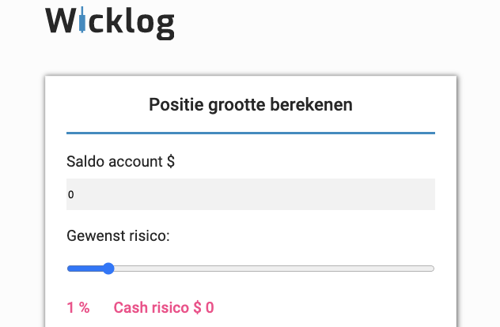
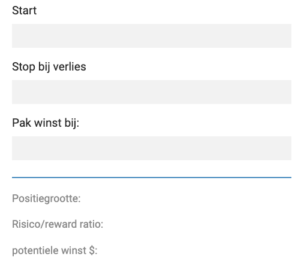

Door: Joost Balk 26-12-2020
Hoe werkt de wicklog rekentool?
De positie grootte berekenaar van Wicklog is één van de meest handige tools die een beginnende cryptodaghandelaar nodig heeft. Veel beginnende traders falen omdat zij geen risicomanagement hanteren, dit betekent dat zij met elke trade die zij ingaan hun gehele kapitaal kunnen verliezen. Dit is absoluut niet de bedoeling!
Hoe bepaal ik mijn risicomanagement?
Risicomanagement wordt bepaald door de grootte van je handelsaccount, wanneer je een klein account van 100-500 euro hebt zal je wellicht iets meer risico moeten nemen dan wanneer je 10000 euro te besteden hebt. Het allerbelangrijkste is hoe jij ervoor gaat zorgen dat je niet na één dag al je geld bent verloren. Gelukkig is wicklog er om je te helpen.
In de eerste twee stappen zet je het saldo van jouw handelsaccount en het door jouw gewenste risico. Let wel op! het ideale risico ligt tussen de 0.5 en 2%. Neem dus niet te veel risico.
In stap 2 zet je de gegevens die je nodig hebt voor de trade die jij in wilt gaan. Dit zijn: jouw startpunt, stop bij verlies van ..., neem je winst wanneer de prijs ... is. Wanneer jij deze gegevens hebt ingevuld zal Wicklog voor jou de rest doen.
Wicklog is er om jou als beginnende trader te helpen en te begeleiden.